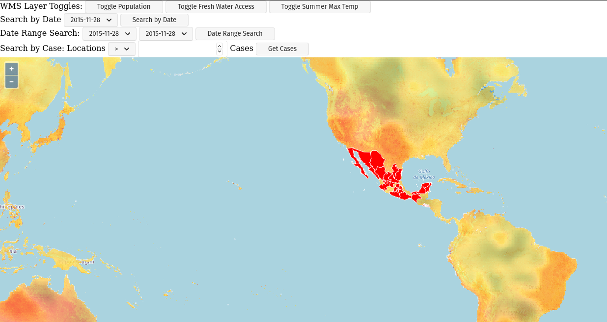
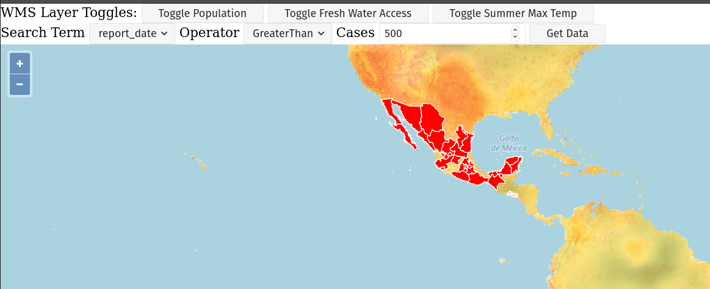

Project: Zika Client
Zika Mission Control
Throughout this class we will build a Zika Mission Control Dashboard. Although, thankfully, the Zika outbreak was contained we will use the data set to practice building a real GIS system. We will focus on one aspect at a time to assemble this project over multiple weeks.
In its entirety, this project will consist of:
- Zika Client (HTML, CSS, JavaScript with OpenLayers)
- Zika API (Java/Spring)
- Zika Geoserver API
- Publicly accessible Geoserver APIs
- Postgres database with geo-spatial Zika data
- ElasticSearch database with geo-spatial Zika data
Once we have developed the system we will work on configuring CI/CD for and deploying each component to the cloud using Amazon Web Services (AWS). Each week we will have a list of requirements that we will need to build into our project. For this first project week we will focus on consuming data in a Zika Client front end.
Project Overview
The Zika Mission Control Client will display an interactive map from Open Street Maps (OSM). The map will present a layer of features that represent Zika outbreak data.
Each week we will build on our currently existing project, so it is crucial to finish the primary objectives for each project week!
Note
When working on a client project it is easy to get distracted trying to make things look pretty! Focus on the primary objectives (wiring up all the logic) before turning your attention to the styling.
Project Requirements
Following are the requirements from our stakeholders and our tech team.
Stakeholder Requirements
- Zika report data needs to be consumable on a graphical map
- Related Zika reporting layers should be added using public Geoserver WMS services
- The public Geoserver layers should have the ability to be toggled on and off to overlay related data at a glance
Technical Requirements
- Version Control: Code base is managed with Git, and a remote repository is hosted on GitLab
- HTML, CSS, and modular JavaScript should be used as appropriate to build the GIS Zika Client (no giant single-file scripts!)
- Supplementary libraries such as OpenLayers should be used to load an interactive map and data layers
- Zika reports should be loaded onto the OpenLayers map to visualize the outbreak data
- A population layer should be included from the a public Geoserver API like this one
- Supplementary layers should be included that assist in the analysis of Zika report data
There are many ways we could go about building this project but, at minimum, we must follow the provided requirements.
An example of what this completed project may look like:

Secondary Objectives
For your secondary objectives no articles will be given to you. You will have to think critically and plan out the tasks needed to complete the objective. You may always reach out to the instructor for guidance but be aware that they will only provide support through discussion – not code!
- Change the opacity of the WMS layers to make them less distracting (give the user the ability to set the opacity of these layers)
- Refactor the UI: reduce the number of buttons, and select boxes (check out the picture at the bottom of this picture for an example)
- Styling: look into some CSS libraries to improve the general look and feel of the HTML elements
- Move the UI elements into an OpenLayers map control
- Zika report locations change color based on the severity of the outbreak
- Display report data associated with a location when one is clicked on the map
- Animate reports displayed by adding them to the map one-by-one on page load
- Search the report data from the Zika Geoserver API using other terms (like city, state or number of cases)
- Use jQuery or another front end framework like React to abstract interactions with the DOM
- Make your map clickable on click event you can display the underlying data of the features in the layer that was clicked
An example of a refactored UI with user changeable search terms:

You would need to put in the proper logic to show or hide various HTML elements based on the search term and type of comparison.
Note
You can accomplish the clicking objective several different ways. But you should have a look at the map events and the forEachFeatureAtPixel utilities built into OpenLayers.
Turning in Your Work
Git Workflow
As you work on your project you will be required to commit early and commit often. Part of your review will include an assessment of your usage of git. You are expected to have a history of commits documenting your progress through the use of descriptive commit messages.
Your git history should include separate branches for each primary objective titled objective-# which contains all the commits associated with its completion.
After completing each objective you can git merge the objective feature branch back into your master branch. Make sure that you push your branches to the remote repo on GitLab after completing each of the primary objectives. This includes pushing the master branch after each objective branch is merged into it.
Warning
When you complete your final objective you will open a Merge Request (MR) on GitLab to merge that objective feature branch into master. Notify your instructor so they can begin your code review.
Code Review
After opening your MR your instructor will review your code and leave feedback. If changes are requested due to an incomplete or non-functioning objective you will be required to implement the suggested changes and push them up for further review. When your instructor has confirmed that your objectives are complete you can work on the Secondary and Bonus objectives!
Presentation
Typically at the end of the week we try to have project presentations where everyone gets a chance to show their project to the rest of the class. Due to the remote nature of this course we may try to do this, or we may skip this. Either way be prepared to show and talk about your project at the end of the project week.
At the end of this course, during your graduation ceremony, you will be expected to present your final project to the attendees. Every project week we will have a presentation as a way for you to practice for this final presentation.